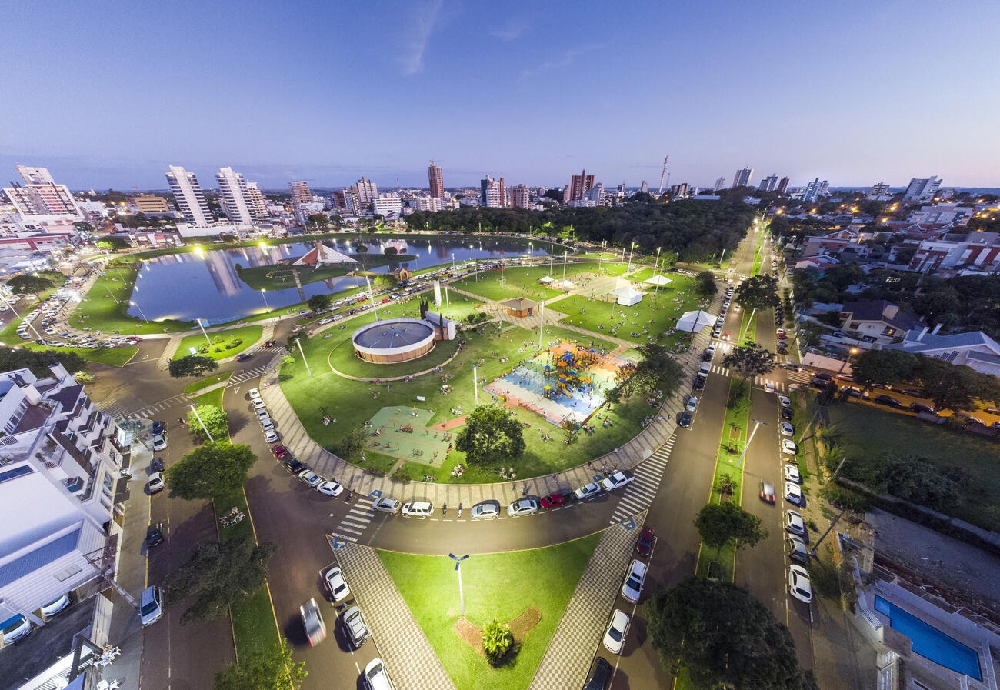
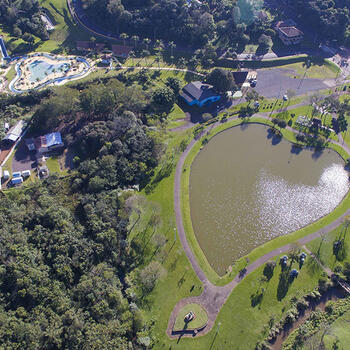

Toledo começou a ser colonizada em 27 de março de 1946, quando os primeiros desbravadores chegaram à região e iniciaram a construção das primeiras casas. Entre as primeiras famílias estavam as de Ruaro e Dalcanale, que trouxeram outras famílias gaúchas para participar da colonização.
O nome Toledo está relacionado ao Arroio Toledo e ao antigo Pouso Toledo, local utilizado como ponto de descanso por tropeiros que transportavam produtos, principalmente erva-mate. Segundo relatos dos pioneiros, o pouso teria sido administrado por um homem chamado Toledo.

Toledo pertencia originalmente ao município de Foz do Iguaçu. Sua emancipação aconteceu em 14 de novembro de 1951, por meio da Lei Estadual nº 790. A instalação oficial do município ocorreu em 14 de dezembro de 1952, após a realização das primeiras eleições municipais.
Nas primeiras eleições, realizadas em 9 de novembro de 1952, foi eleito Ernesto Dall’Oglio, primeiro prefeito de Toledo. A primeira Câmara Municipal possuía nove vereadores, tendo Güerino Antônio Viccari como seu primeiro presidente.
Durante as décadas seguintes, Toledo cresceu e passou a desempenhar um papel importante no desenvolvimento do Oeste do Paraná. A expansão do município também contribuiu para o surgimento de novas cidades, como Marechal Cândido Rondon, Palotina, Assis Chateaubriand, Nova Santa Rosa, Ouro Verde do Oeste e São Pedro do Iguaçu.
A economia de Toledo desenvolveu-se principalmente através da agropecuária, agroindústria e indústria, além do comércio e do setor farmacêutico. A cidade também ganhou destaque nacional pela produção de suínos e pela sua forte ligação com a agricultura.
Toledo possui diversos atrativos turísticos, culturais e naturais. Entre eles estão o Parque Ecológico Diva Paim Barth, cachoeiras, trilhas, o Museu Histórico, a Casa da Cultura, o Teatro Municipal e o Centro de Eventos Ismael Sperafico.
Uma das principais marcas culturais de Toledo é a Festa Nacional do Porco Assado no Rolete, tradição que ajudou a cidade a ficar conhecida nacionalmente como a “Cidade do Porco no Rolete”. A gastronomia ligada ao prato também contribuiu para o desenvolvimento turístico do município.
Atualmente, Toledo é um importante centro econômico, educacional, tecnológico e agroindustrial do Oeste do Paraná. A cidade também possui instituições de ensino superior e conta com o Biopark, que contribui para a formação de um polo de inovação, tecnologia e desenvolvimento.
Fonte das Informações